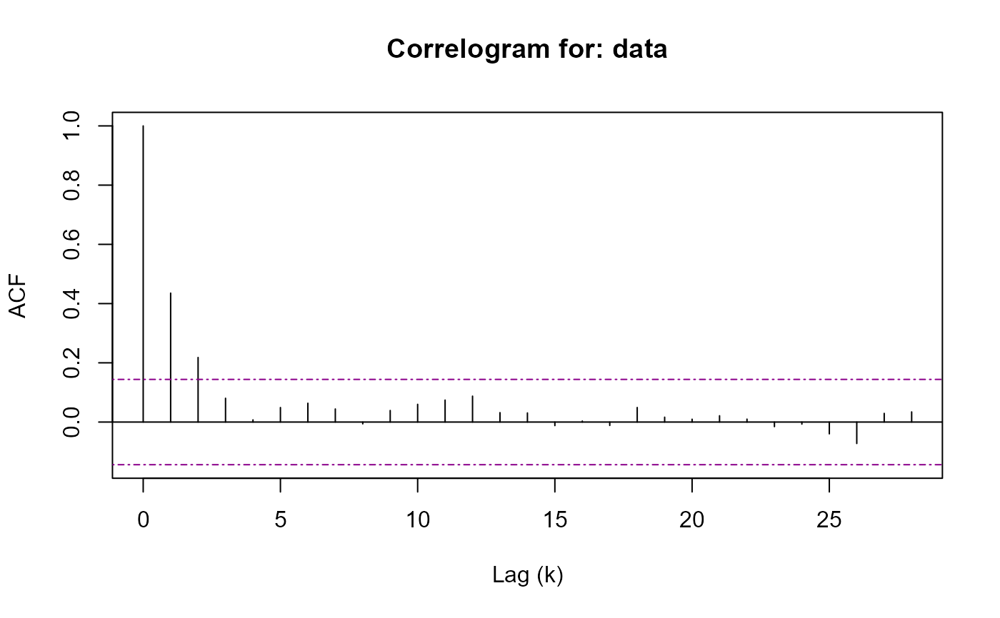
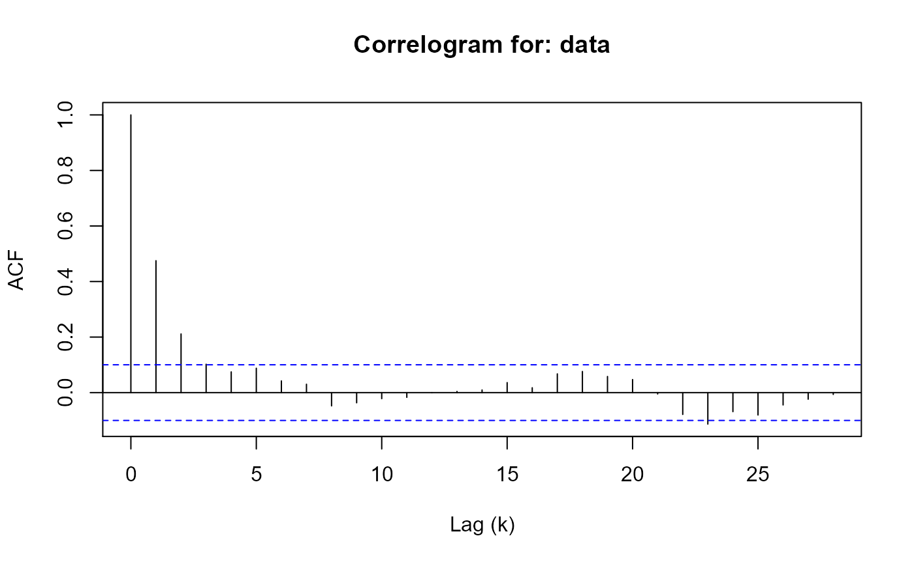

R/pwsd.R
pwsd.RdRun the Automatic Block-Length selection method proposed by Politis and White
(2004) and corrected in Patton, Politis, and White (2009). The method is
based on spectral density estimation via flat-top lag windows of Politis and
Romano (1995). This code was adapted from b.star to add
functionality and include correlogram support including an S3 method,
see Hayfield and Racine (2008).
pwsd( data, K_N = NULL, M_max = NULL, b_max = NULL, c = NULL, round = FALSE, correlogram = TRUE )
| data | an \(n x k\) data.frame, matrix, or vector (if \(k = 1\)) where the optimal block-length will be computed for each of the \(k\) columns. |
|---|---|
| K_N | an integer value, the maximum lags for the auto-correlation,
\(rho_k\), which to apply the implied hypothesis test. Defaults to
|
| M_max | an integer value, the upper-bound for the optimal number of lags, \(M\), to compute the auto-covariance for. See Theorem 3.3 (ii) of Politis and White (2004). |
| b_max | a numeric value, the upper-bound for the optimal block-length.
Defaults to |
| c | a numeric value, the constant which acts as the significance level
for the implied hypothesis test. Defaults to |
| round | a logical value, if set to |
| correlogram | a logical value, if set to |
an object of class 'pwsd'
Andrew Patton, Dimitris N. Politis & Halbert White (2009) Correction to "Automatic Block-Length Selection for the Dependent Bootstrap" by D. Politis and H. White, Econometric Review, 28:4, 372-375, DOI: doi: 10.1080/07474930802459016
Dimitris N. Politis & Halbert White (2004) Automatic Block-Length Selection for the Dependent Bootstrap, Econometric Reviews, 23:1, 53-70, DOI: doi: 10.1081/ETC-120028836
Politis, D.N. and Romano, J.P. (1995), Bias-Corrected Nonparametric Spectral Estimation. Journal of Time Series Analysis, 16: 67-103, DOI: doi: 10.1111/j.1467-9892.1995.tb00223.x
Tristen Hayfield and Jeffrey S. Racine (2008). Nonparametric Econometrics: The np Package. Journal of Statistical Software 27(5). DOI: doi: 10.18637/jss.v027.i05
# Generate AR(1) time series sim <- stats::arima.sim(list(order = c(1, 0, 0), ar = 0.5), n = 500, innov = rnorm(500)) # Calculate optimal block length for series pwsd(sim, round = TRUE)#> $BlockLength #> b_Stationary b_Circular #> data 9 10 #> #> $Acf #> $Acf$data #> #> Autocorrelations of series 'data[, i]', by lag #> #> 0 1 2 3 4 5 6 7 8 9 10 #> 1.000 0.475 0.211 0.102 0.075 0.088 0.042 0.030 -0.048 -0.037 -0.022 #> 11 12 13 14 15 16 17 18 19 20 21 #> -0.017 0.000 0.004 0.009 0.036 0.018 0.068 0.076 0.058 0.047 -0.005 #> 22 23 24 25 26 27 28 #> -0.079 -0.113 -0.069 -0.081 -0.044 -0.024 -0.007 #> #> #> $parameters #> n k c K_N M_max b_max m_hat M rho.k.critical #> [1,] 500 1 1.959964 5 28 68 3 6 0.1439999 #> #> $Call #> pwsd(data = sim, round = TRUE) #> #> attr(,"class") #> [1] "pwsd"